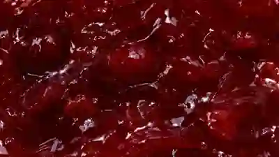

CHERRY
RIOT
A bold, playful jam brand that turns simple moments into something juicy.
BIG ATTITUDE✦
The idea
CHERRY RIOT is a fictional artisan preserve brand and immersive product website exploring how visual storytelling, motion and texture can make a simple product feel memorable.
The goal
- Build an expressive premium brand identity
- Create an engaging, scroll-driven experience
- Show the product in a believable setting
- Make every device feel thoughtfully designed
On every device
A fully responsive, immersive concept for desktop and mobile. These are live-rendered views of our working demo.
Mood & feel.



Colour palette
Typography
Headlines
Interface & body
Sensory product photography, elegant editorial headlines and high-contrast cherry-red accents.

RIOT.ARTISAN PRESERVES
THAN
JAM.
Made to
stand out.
Packaging, campaign imagery and responsive ecommerce designed as one coherent fictional brand experience.
RIOT.SMALL BATCH / BIG FEELINGS
Scroll reveal.
A scroll-driven jam surface reveals the hero beneath it. Stretching drips, glossy highlights and a textured liquid edge are controlled by the visitor's scroll.
Try the real scroll interaction ↗One brand.
Every screen.
Six individual interface views—not repeated placeholders. Each device shows an actual page from the interactive CHERRY RIOT storefront demo.
Desktop views
THE WEBSITE, FROM BRAND STORY TO BAGMobile views
THE SAME EXPERIENCE, PURPOSEFULLY ADAPTEDFrom idea to interaction.
Develop a distinctive voice for a fictional preserve brand.
Work with rich food photography, expressive type and colour.
Create distinct homepage, product, bag and pairing interfaces.
Implement a functional demo and scroll-controlled liquid reveal.
Not just
a picture.
Browse the working storefront, select a flavour, adjust quantities and add items to a demonstration bag. Or explore the original jam-scroll homepage.
Concept project. Fictional products and prices. No real orders or payments.